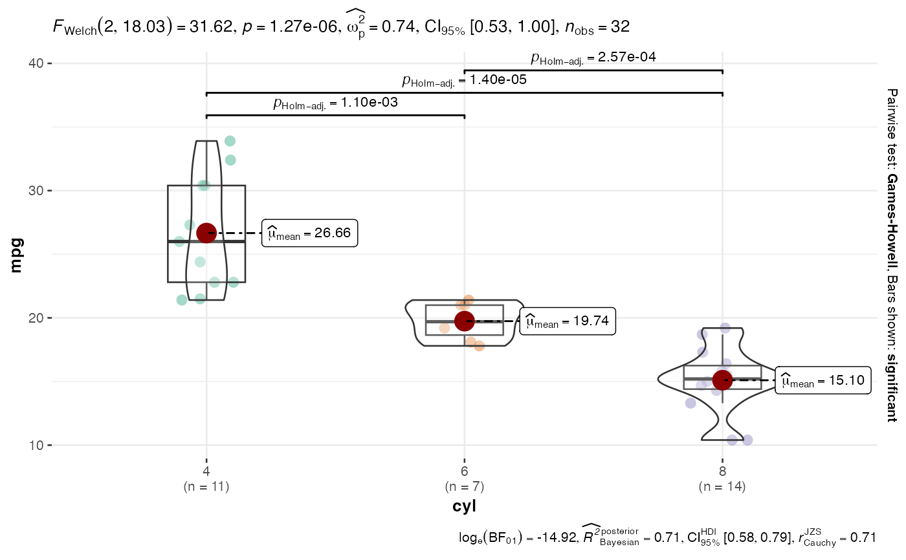

Automatically selects and generates the most appropriate statistical visualization based on variable data types. Features enhanced error messages with contextual guidance, robust data validation, and comprehensive fallback options. Supports both independent and repeated measures designs with various plot types including violin plots, scatter plots, bar charts, and alluvial diagrams.
Usage
statsplot2(
data,
dep,
group,
grvar = NULL,
direction = "independent",
distribution = "p",
alluvsty = "t1",
excl = FALSE,
sampleLarge = FALSE
)Arguments
- data
The data as a data frame.
- dep
The dependent variable (y-axis, 1st measurement). Can be continuous or categorical.
- group
The grouping variable (x-axis, 2nd measurement). Can be continuous or categorical.
- grvar
Optional grouping variable for creating grouped plots across multiple panels.
- direction
Measurement design type. "independent" for between-subjects comparisons, "repeated" for within-subjects/repeated measures comparisons.
- distribution
Statistical approach: "p" = parametric, "np" = nonparametric, "r" = robust, "bf" = Bayes factor.
- alluvsty
Style for alluvial diagrams: "t1" = ggalluvial with stratum labels, "t2" = easyalluvial with automatic variable selection.
- excl
If TRUE, excludes rows with missing values before analysis.
- sampleLarge
If TRUE, automatically samples large datasets (>10,000 rows) to 5,000 rows for improved performance.
Value
A results object containing:
results$todo | a html | ||||
results$ExplanationMessage | a html | ||||
results$plot | an image |
Examples
# Automatic plot selection for factor vs continuous variables
statsplot2(
data = mtcars,
dep = "mpg",
group = "cyl",
direction = "independent",
distribution = "p"
)
#>
#> AUTOMATIC PLOT SELECTION BASED ON VARIABLE TYPES
#>
#> <div style='font-family: -apple-system, BlinkMacSystemFont, "Segoe
#> UI", Roboto, sans-serif;'><div style='background: #f8f9fa;
#> border-left: 4px solid #2196f3; padding: 15px; margin: 10px 0;
#> border-radius: 4px;'><h4 style='margin-top: 0; color: #1976d2;'>Plot
#> Selection Summary
#>
#> Violin plot will be used to compare mpg *(continuous)* between
#> independent groups defined by cyl *(factor)*.
#>
#> <p style='color: #616161; font-size: 0.85em; margin-top:
#> 10px;'>Technical details: Plot type: independent_factor_continuous |
#> Variables: mpg (continuous) vs cyl (factor)
#>
#> <div style='background: #f1f8e9; border-left: 4px solid #689f38;
#> padding: 15px; margin: 10px 0; border-radius: 4px;'><h4
#> style='margin-top: 0; color: #558b2f;'>Clinical Interpretation
#>
#> This violin plot compares the distribution of mpg between different
#> cyl groups.
#>
#> <ul style='margin: 10px 0; padding-left: 20px;'>Medians: Center lines
#> show typical values in each groupSpread: Wider violins indicate more
#> variabilityDistribution shape: Violin width reveals data density at
#> different valuesStatistical testing: Included when applicable to
#> assess group differences<div style='background: #ffffff; padding:
#> 10px; margin-top: 10px; border-radius: 4px; border: 1px solid
#> #ddd;'><h5 style='margin-top: 0; color: #424242;'>Statistical Approach
#>
#> <p style='margin: 5px 0;'>Parametric: Assumes normally distributed
#> data. Best for continuous variables with bell-shaped distributions.
#>
#> <p style='font-size: 0.85em; color: #757575;'>When to use: Data
#> appears symmetric, no extreme outliers, n≥30 per group

# Repeated measures with alluvial diagram
statsplot2(
data = survey_data,
dep = "condition_baseline",
group = "condition_followup",
direction = "repeated",
alluvsty = "t1"
)
#> Error: object 'survey_data' not found
# Enhanced error messages provide contextual guidance:
# - Variable names and types in error messages
# - Specific data requirement feedback
# - Package installation instructions when needed
# - Actionable suggestions for unsupported combinations